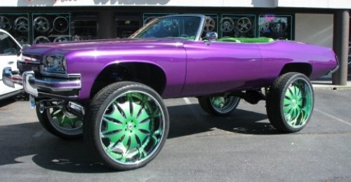

Make testing suck less
Write your tests upfront

Make your tests fast
- Isolate your tests from IO as much as possible.
- Only run the tests your are working on.
Stop testing internals

Make your tests communicate your intention
describe('resize', () => {
describe('when only given a width', () => {
it ('resizes images proportionally')
return expect(
'./2048x1324.jpg',
'when scaled to', { width: 1024 },
'to have metadata satisfying', {
format: 'JPEG',
size: { width: 1024, height: 662 }
}
})
})
})
})
Choose a tool that gives you great feedback
expect([0, 1, 2, 4, 5], 'to equal', [1, 2, 3, 4])
expected [ 0, 1, 2, 4, 5 ] to equal [ 1, 2, 3, 4 ]
[
0, // should be removed
1,
2,
//
missing
3
4,
5 // should be removed
]
Stop testing at the wrong level of abstraction

const atf = 'AT THE FRONTEND'
expect(atf.indexOf('FRONTEND') !== -1, 'to be true')
instead of
expect(atf, 'to contain', 'FRONTEND')
Take it to the next level

Tic Tac Toe
import Game from 'tic-tac-toe-js/lib/game'
const game = new Game()
game.move('O', 9) // X | O |
game.move('X', 6) // --+---+--
game.move('O', 8) // | O | X
game.move('X', 7) // --+---+--
game.move('O', 5) // X | O | O
game.move('X', 1)
game.move('O', 2)
expect(
game.at(0) === 'X' && // X | O |
game.at(1) === 'O' && // --+---+--
game.at(2) === null && // | O | X
game.at(3) === null && // --+---+--
game.at(4) === 'O' && // X | O | O
game.at(5) === 'X' &&
game.at(6) === 'X' &&
game.at(7) === 'O' &&
game.at(8) === 'O',
'to be true'
)
expected false to be true
expect(game.at(0), 'to be', 'X') // X | O |
expect(game.at(1), 'to be', 'O') // --+---+--
expect(game.at(2), 'to be null') // | O | X
expect(game.at(3), 'to be null') // --+---+--
expect(game.at(4), 'to be', 'O') // X | O | O
expect(game.at(5), 'to be', 'X')
expect(game.at(6), 'to be', 'X')
expect(game.at(7), 'to be', 'O')
expect(game.at(8), 'to be', 'O')
expected null to be 'X'
expect([ // X | O |
game.at(0), game.at(1), game.at(2), // --+---+--
game.at(3), game.at(4), game.at(5), // | O | X
game.at(6), game.at(7), game.at(8) // --+---+--
], 'to equal', [ // X | O | O
'X', 'O', null,
null, 'O', 'X',
'X', 'O', 'O'
])
expected [ null, 'X', 'O', null, null, 'O', 'X', 'X', 'O' ]
to equal [ 'X', 'O', null, null, 'O', 'X', 'X', 'O', 'O' ]
[
┌───▷
│ ┌─▷
│ │
└─│──
└──
null,
'X', // should be moved
'O', // should be moved
null,
null, // should be removed
'O',
'X',
'X',
'O'
//
missing
'O'
]
expect( // X | O |
game.toString(), // --+---+--
'to equal', [ // | O | X
'X | O | ', // --+---+--
'--+---+--', // X | O | O
' | O | X',
'--+---+--',
'X | O | O'
].join('\n')
)
Let's make it fail
expect( // X | O |
game.toString(), // --+---+--
'to equal', [ // | O | X
'O | X | ', // --+---+--
'--+---+--', // X | O | O
' | O | X',
'--+---+--',
'X | O | O'
].join('\n')
)
expected 'X | O | \n--+---+--\n | O | X\n--+---+--\nX | O | O'
to equal 'O | X | \n--+---+--\n | O | X\n--+---+--\nX | O | O'
X | O |
O | X |
--+---+--
| O | X
--+---+--
X | O | O
expect.addType({
name: 'game',
base: 'object',
identify: (value) => value instanceof Game,
inspect: (game, depth, output) => output.text(game.toString())
})
expect.addAssertion('<game> to satisfy <string>',
(expect, game, expectation) => {
expect.argsOutput[0] = output => output.text(expectation)
expect(game.toString(), 'to equal', expectation)
})
expect( // X | O |
game, // --+---+--
'to satisfy', [ // | O | X
'O | X | ', // --+---+--
'--+---+--', // X | O | O
' | O | X',
'--+---+--',
'X | O | O'
].join('\n')
)
expected
X | O |
--+---+--
| O | X
--+---+--
X | O | O
to satisfy
O | X |
--+---+--
| O | X
--+---+--
X | O | O
X | O |
O | X |
--+---+--
| O | X
--+---+--
X | O | O
Pimp it a bit

expect.addAssertion('<game> to satisfy <string>',
(expect, game, expectation) => {
expect.errorMode = 'bubble'
const actual = boardToJS(game.toString())
const expected = boardToJS(expectation)
if (!expect.equal(actual, expected)) {
expect.fail(output => {
output.boardDiff(expected, actual)
})
}
})
expect(
game,
'to satisfy',
`O | X |
--+---+--
| O | X
--+---+--
X | O | O`
)
Expected
O | X |
--+---+--
| O | X
--+---+--
X | O | O
Actual
X | O |
--+---+--
| O | X
--+---+--
X | O | O
expect(
`O | X | O
--+---+--
X | |
--+---+--
O | X | O`,
'when placing X at position', 5,
'to satisfy',
`O | X | O
--+---+--
X | | X
--+---+--
O | X | O`
)
When placing X at position 5 on board:
O | X | O
--+---+--
X | X |
--+---+--
O | X | O
Expected
O | X | O
--+---+--
X | | X
--+---+--
O | X | O
Actual
O | X | O
--+---+--
X | X |
--+---+--
O | X | O
expect(
` | |
--+---+--
X | O | X
--+---+--
O | X | O`,
'when placing O at position', 3,
'to have O as the winner'
)
When placing O at position 3 on board:
| | O
--+---+--
X | O | X
--+---+--
O | X | O
expected
| | O
--+---+--
X | O | X
--+---+--
O | X | O
to have O as the winner
the game is not finished yet
Testing React components
with unexpected-react
Dave Brotherstone - @bruderstein

import React, { Component } from 'react'
class Counter extends Component {
constructor (props) { super(props); this.state = { value: 0 } }
increment = () => this.setState({ value: this.state.value + 1 })
decrement = () => this.setState({ value: this.state.value - 1 })
render = () => (
<div>
<button onClick={this.increment}>+</button>
<div className='value'>{`${this.state.value}`}</div>
<button onClick={this.decrement}>-</button>
</div>
)
}
import TestUtils from 'react-addons-test-utils'
const rendered = TestUtils.renderIntoDocument(
<Counter/>
)
expect(
rendered,
'to have rendered',
<div>
<button>+</button>
<div className='value'>0</div>
<button>-</button>
</div>
)
Only mention your needs
expect(
rendered,
'to have rendered',
<div><div className='value'>0</div></div>
)
expect(
rendered,
'queried for',
<div className='value'/>,
'to have rendered',
<div className='shiny'/>
)
expected
<Counter>
<div>
<button onClick={function () { /* ... */ }}></button>
+
<div className="value"></div>
0
<button onClick={function () { /* ... */ }}></button>
-
</div>
</Counter>
queried for <div className="value" /> to have rendered <div className="shiny" />
<div className="value"
//
missing class 'shiny'
>
0
</div>
expect(
rendered,
'queried for',
<div className='value'/>,
'to have rendered',
<div>{ expect.it('to match', /\d+/) }</div>
)
expect(
rendered,
'with event click', 'on', <button>+</button>,
'with event click', 'on', <button>-</button>,
'with event click', 'on', <button>+</button>,
'with event click', 'on', <button>+</button>,
'to contain', <div className='value'>2</div>
)
expect(
rendered,
'with event click', 'on', <button>-</button>,
'to contain', <div className='value'>3</div>
)
expected
<Counter>
<div>
<button onClick={function () { /* ... */ }}></button>
+
<div className="value"></div>
1
<button onClick={function () { /* ... */ }}></button>
-
</div>
</Counter>
with event 'click' on <button></button> to contain <div className="value"></div>
-
3
the best match was
<div className="value">
1
//
//
1
3
</div>
Testable documentation
MDN: Object.keys

vs
expect(Object.keys(['a', 'b', 'c']), 'to equal', ['0', '1', '2'])
unexpected-markdown
- Examples are executed in the content of the examples before it
- Support for async examples by returning a promise
- You can skip examples
- You can assert that an example throw a given error
- Source maps
Example
The end
@sunesimonsen / @unexpectedjs